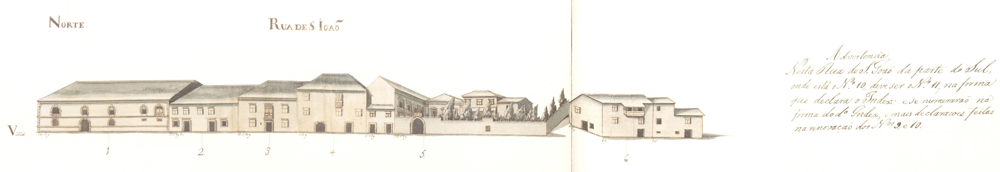

Rua de S.João - vista norte.

Rua de S.João - vista sul.
9 |
Rua de S.João |
|  Rua de S.João - vista norte. |
Rua de S.João - vista sul. |
Rua ampla, de boas e grandes casas de pedra, aberta por D. Diogo de Sousa: «Fez a rua de S. Marcos, a qual é da Cappella maior da Sé até a porta do dito S. Marcos; comprou muitas casas acerca da Sé para fazer a dita rua e quintaes atraz d'ellas porque tudo era cerrado de casas e de quintaes e não havia ahi rua nenhuma...»
Esta rua é uma das mais importantes obras urbanísticas de D. Diogo de Sousa. Ao ligar as traseiras da Sé com a porta de S. João, este arcebispo não se limitou a permitir um maior ângulo de visão para a belíssima capela mor da Sé, também obra sua; acima de tudo o que esta artéria representa é um violento abanão na estrutura urbana, pois que será ampla e de bons prédios, grandes e de pedra; e, principalmente, permitirá o abrir a cidade ao exterior, porque continuava pelo Campo dos Remédios e Granginhos em direcção à rua da Ponte de Guimarães.
Nela se fixaria a família dos Coimbras — família que acompanhou D. Diogo na sua vinda para Braga — em casa hoje reconstruída noutro local e desenhada por João de Castilho; os Paiva Marinho, na notável casa dos Paivas, riscada em finais do séc. XVI por alguém que passou por Florença e procurou transplantar um pouco da arquitectura do Palácio Pitti; a irmã do Cónego Francisco Pacheco Pereira na grande casa do Passadiço; e os Lagos e os Antões Pereira em casas mais simples, mas não menos belas, que no Mappa se vêem com os nºs 9 e 10.
| Número | Enfiteuta | Foro | Descrição |